Java Introduction
What is Java
Java is a widely used object-oriented programming language and software platform that runs on billions of devices, including notebook computers, mobile devices, gaming consoles, medical devices and many others. The rules and syntax of Java are based on the C and C++ languages.
One major advantage of developing software with Java is its portability. Once you have written code for a Java program on a notebook computer, it is very easy to move the code to a mobile device. When the language was invented in 1991 by James Gosling of Sun Microsystems (later acquired by Oracle), the primary goal was to be able to "write once, run anywhere."
It's also important to understand that Java is much different from JavaScript. Javascript does not need to be compiled, while Java code does need to be compiled. Also, Javascript only runs on web browsers while Java can be run anywhere.
New and improved software development tools are coming to market at a remarkable pace, displacing incumbent products once thought to be indispensable. In light of this continual turnover, Java’s longevity is impressive; more than two decades after its creation, Java is still the most popular language for application software development—developers continue to choose it over languages such as Python, Ruby, PHP, Swift, C++, and others. As a result, Java remains an important requirement for competing in the job market.
It is used for:
- Mobile applications
- Desktop applications
- Web applications
- Web servers and application servers
- Games
- Database connection
- And much, much more!
Why Used Java?
- Java works on different platforms (Windows, Mac, Linux, Raspberry Pi, etc.)
- It is one of the most popular programming language in the world
- It has a large demand in the current job market
- It is easy to learn and simple to use
- It is open-source and free
- It is secure, fast and powerful
- It has a huge community support (tens of millions of developers)
- Java is an object oriented language which gives a clear structure to programs and allows code to be reused, lowering development costs
- As Java is close to C++ and C#, it makes it easy for programmers to switch to Java or vice versa
Java Install
Install Java in your PC.Some PCs might have Java already installed.
To check if you have Java installed on a Windows PC, search in the start bar for Java or type the following in Command Prompt (cmd.exe):
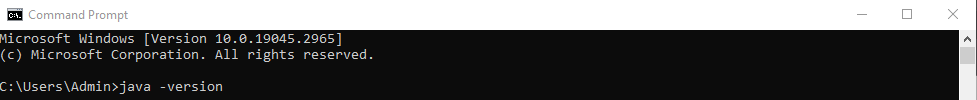
If Java is installed, you will see something like this (it's depend on your java version):
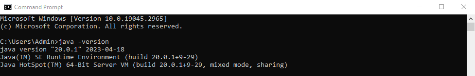
If you do not have Java installed on your computer, you can download it for free at oracle.com.
Setup for Windows
To install Java on Windows:
- Go to "System Properties" (Can be found on Control Panel > System and Security > System > Advanced System Settings)
- STEP 1
- Click on the "Environment variables" button under the "Advanced" tab
- STEP 2
- Then, select the "Path" variable in System variables and click on the "Edit" button
- STEP 3
- Click on the "New" button and add the path where Java is installed, followed by \bin. By default, Java is installed in C:\Program Files\Java\jdk-20\bin (If nothing else was specified when you installed it). In that case, You will have to add a new path with: C:\Program Files\Java\jdk-20\bin Then, click "OK", and save the settings
- STEP 4
- At last, open Command Prompt (cmd.exe) and type java -version to see if Java is running on your machine
- STEP 5
- 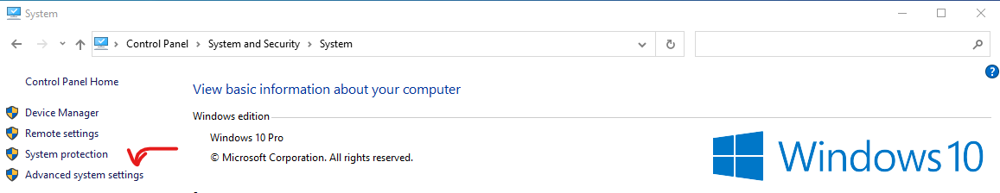
- 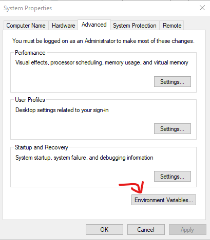
- 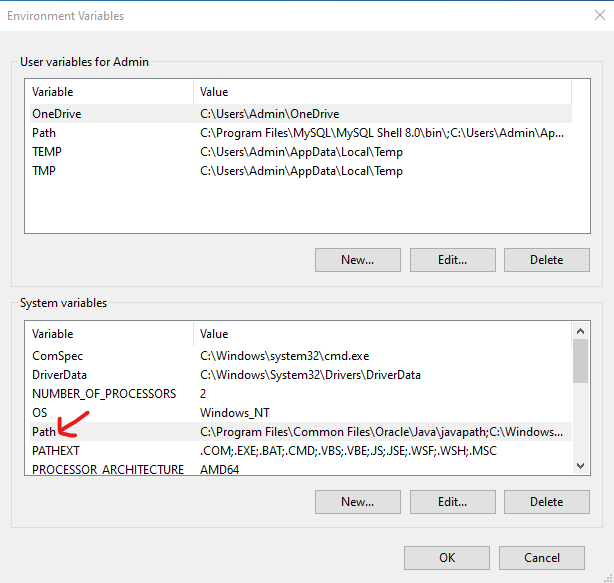
- 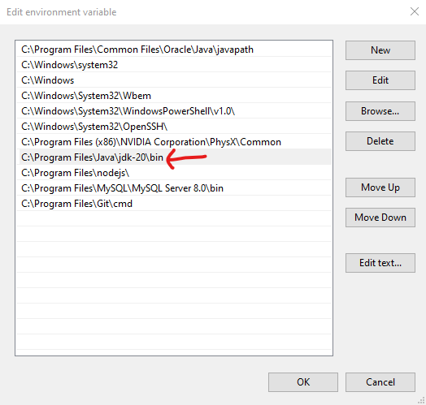
Write the following in the command line (cmd.exe):
If Java was successfully installed, you will see something like this (depending on version):
Lets Start
In Java, every application begins with a class name, and that class must match the filename.
Let's create our first Java file, called Main.java, which can be done in any text editor (like Notepad,Eclipse,NetBeans,ect.).
The file should contain a "Hello World" message, which is written with the following code:
- Main.java
- 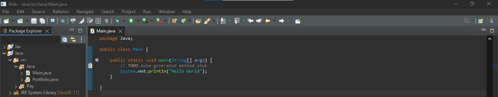
Don't worry if you don't understand the code above - we will discuss it in detail in later chapters. For now, focus on how to run the code above (in this example I'm using Eclipse).
Save the code (press the Ctrl+S to save the code). To run the code click the run button above or (press Ctrl+F11)
- 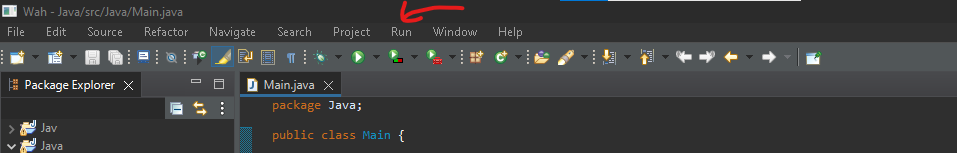
This will compile your code. If there are no errors in the code, and the output should read:
- 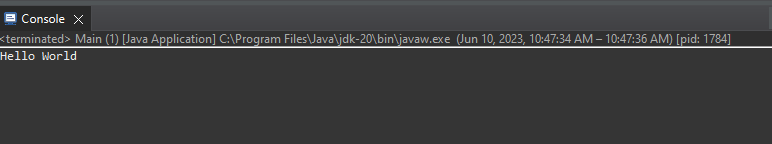
If there are errors in the code this will be the result.
- 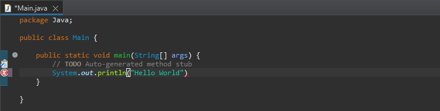
- 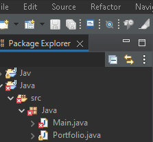
- 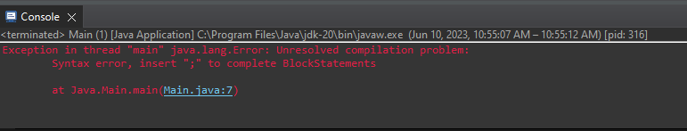
Example explained
Every line of code that runs in Java must be inside a class. In our example, we named the class Main. A class should always start with an uppercase first letter. Java is case-sensitive: "MyClass" and "myclass" has different meaning.
The name of the java file must match the class name. When saving the file, save it using the class name and add ".java" to the end of the filename. To run the code like the example above, make sure that Java is properly installed: Go to the Let's Start for how to install Java.
Syntax
The main Method
The main() method is required and you will see it in every Java program:
The curly braces {} marks the beginning and the end of a block of code.
System is a built-in Java class that contains useful members, such as out, which is short for "output". The println() method, short for "print line", is used to print a value to the screen (or a file).
Don't worry too much about System, out and println(). Just know that you need them together to print stuff to the screen.
You should also note that each code statement must end with a semicolon (;).
Java Output/Print Text
You learned from the previous chapter that you can use the(>span style="color: red;">println()) method to output values or print text in Java: